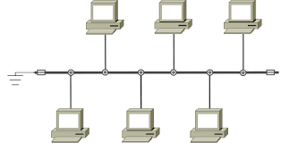
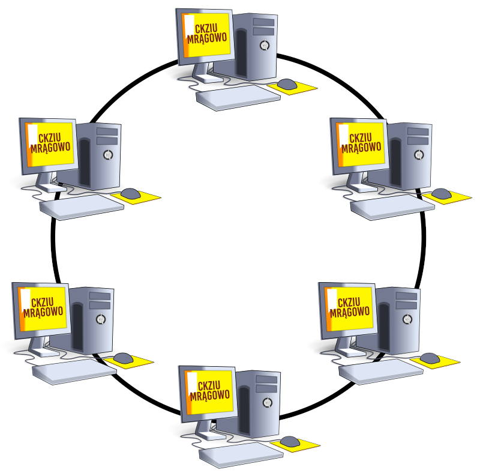
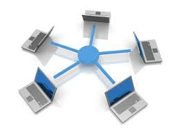
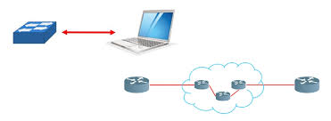
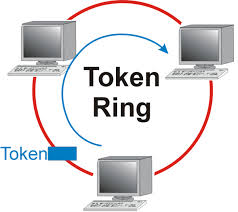
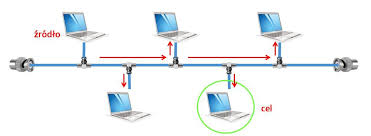

Do fizycznych topologii sieci zaliczamy topologię:
Topologia magistrali charakteryzuje się tym, że wszystkie urządzenia podłącza się do wspólnego medium transmisyjnego. Powszechnie stosowanym w tej topologii medium transmisyjnym był kabel koncentryczny. Jedną z wad tej topologii, była niewielką przepustowość (maksymalnie do 10 Mb/s).Topologia ta stosowana była do budowy lokalnych sieci komputerowych. Celowo używam tutaj słowa "była", ponieważ nie jest już powszechnie stosowana. Poza niską przepustowością, charakteryzowała ją również duża podatność na awarię sieci. W momencie przerwania kabla koncentrycznego cała sieć przestawała działać. Niewątpliwą zaletą w zastosowaniu tej topologii był niewielki koszt jej wdrożenia, ponieważ nie trzeba było stosować setek metrów kabla ani żadnych urządzeń pośredniczących
W topologii pierścienia każde urządzenie podłączone jest z dwoma sąsiadami, tworząc zamknięty krąg. Podobnie jak w przypadku topologii magistrali, przy budowie nie stosuję się dużej ilości okablowania oraz dodatkowych urządzeń. Ponadto można wykorzystać różne media transmisyjne, począwszy od kabla koncentrycznego, po skrętkę miedzianą, aż do kabli światłowodowych. Wadą tego rodzaju topologii jest fakt, iż przerwanie medium lub awaria jednego z komputerów powoduje przerwę w działaniu całej sieci. Aby temu zapobiec stosuje się tzw. podwójny pierścień, czyli podwaja się liczbę połączeń pomiędzy urządzeniami. Wówczas taką topologię nazywa się topologią podwójnego pierścienia
W topologii gwiazdy urządzenia podłączone są do centralnego punktu, stanowiącego punkt dostępu do sieci. Dawniej punkt ten stanowiły koncentratory (ang. hub), obecnie natomiast stosuje się przełączniki (ang. switch). W lokalnych sieciach jest to najczęściej spotykana topologia, ponieważ jest prosta w zaprojektowaniu, budowie oraz rozbudowie, odporna na awarie i łatwo zarządzaną. Dodatkowym plusem jest fakt, iż można przy jej budowie wykorzystać różne media transmisyjne, takie jak miedziana skrętka, kabel światłowodowy czy fale radiowe (WLAN). Istotną wadę stanowić może natomiast koszt budowy, ponieważ wymagane jest zastosowanie dodatkowych urządzeń (switchy) oraz wiele metrów okablowania.
do topologii Logicznych zaliczamy
W topologii typu punkt-punkt dane przesyłane są tylko od jednego urządzenia do drugiego. Urządzenia te mogą być podłączone ze sobą bezpośrednio, np. komputer z przełącznikiem, jak również pośrednio, na duże odległości, z wykorzystaniem urządzeń pośredniczących, czego przykładem może być połączenie ze sobą dwóch ruterów oddalonych od siebie o wiele kilometrów. Zarówno w jednym jak i drugim przypadku mówić możemy o logicznym połączeniu punkt-punkt. Jest to logiczna topologia często stosowana w sieciach lokalnych, w których wykorzystuje się fizyczną topologie gwiazdy.
W topologii przekazywania żetonu, dane przekazywane są kolejno do urządzeń połączonych w sieć. Urządzenie, które otrzyma porcję danych, analizuje czy są one kierowane do niego czy też nie. Jeśli dane nie są do niego adresowane, przekazuje je dalej, do sąsiedniego urządzenia. W taki sposób, dane przesyłane są przez wszystkie urządzenia występujące pomiędzy urządzeniem źródłowym, a docelowym.
Topologia wielodostępowa (czasami zwana również logiczną topologią rozgłaszania lub magistrali) umożliwia komunikację urządzeń w sieci poprzez jedno fizyczne medium transmisyjne. Najczęściej stosowana była wspólnie z fizyczną topologią magistrali oraz gwiazdy na wczesnym etapie jej rozwoju, kiedy to stosowano jeszcze koncentratory jako punkty dostępowe do sieci. Każde urządzenie w tej topologii widzi dane przesyłane przez sieć ponieważ są one przesyłane do wszystkich urządzeń, ale tylko konkretne urządzenie, do którego dane są adresowane je interpretuje. W związku z tym, że urządzenia w sieci korzystają ze wspólnego medium, konieczne było wprowadzenie mechanizmów kontrolujących dostęp do tego medium, te mechanizmy to: CSMA/CD, CSMA/CA oraz Token-Passing.
